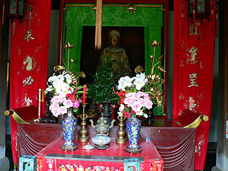
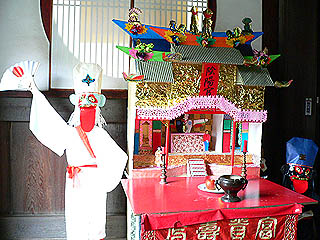
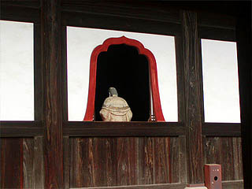
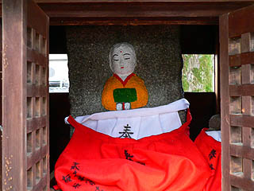

萬福寺/京都府宇治市
宇治にある萬福寺は黄檗宗の大本山だ。
黄檗宗といえば当サイトの熱心な読者の方ならピーンと来る方も多かろう。
日本最初のさざえ堂を擁した江戸本所の五百羅漢寺やその五百羅漢堂を模した名古屋大龍寺、奇妙な本堂＆かご大仏でお馴染みの岐阜の正法寺などなど江戸奇怪仏教建築の虎の穴ともいうべき宗派である。
黄檗宗は承慶３（１６５４）年中国から渡来してきた隱元によって開かれた宗派で、当時鎖国状態であった日本の文化に風穴をあけるかのようなインパクトを与えたはずである。当時の最先端のトレンドであった明朝様式の粋を極めたのが17世紀の寛文年間に建てられた萬福寺なのだ。
山門を 出れば日本ぞ
茶摘み唄
この句は当時の日本人がいかにこの寺にショックを受けたかを物語っている。
まんまチャイナスタイルの境内の様子は当時の本朝仏教関係者もさぞブッ飛んだ事だろう。
さてさて萬福寺の境内を歩いてみましょう。
訪れたのは丁度、普度勝会という行事の直前、ホントは普度勝会に登場する「あるもの」が見たかったのだが、まあ、それは後程。
三門は二階建て。両サイドに階段がある。
階段は登れたが、中に入る扉が閉ざされたいたので様子は伺い知れない。まあ、羅漢さんとかが並んでるんでしょうなあ。
門を潜ると天王殿。いわゆる前堂だ。三門から天王殿に延びる菱形の敷石なんかも華南のお寺っぽい。
本堂と法堂の間には回廊があって、いかにも禅寺らしい佇まいだ。

さて。
ここからが本題です。

大雄宝殿の片隅に紙で出来た家があった。
はい。お察しの通り、あの世へ旅立った方へのマイホームのプレゼントです。
この紙の家は冥宅というのだそうだ。
華南ではお馴染みの追善供養の習俗だが、日本で見かけるのは珍しい。
この冥宅、勿体ない事に普度勝会の最後に滅罪焼却！ということで燃やしてしまうのだ。
ちなみに知り合いの華南出身の方に聞いたハナシでは葬式の際にもこの冥宅をバンバン燃やすそうです。
冥宅の左右には黒い人と白い人が立っている。
このアバウトな造形は300年以上の時を刻んだ厳粛な境内においてひたすら浮きまくっている。
冥宅には陰陽官と書かれた額が掲げられている。
陰陽官とは恐らく中に入る人の事なのだろう。だってこんなんですもん。
左右が白黒のツートンカラー。まるでキカイダー、いやアシュラ男爵、いや、どっちでもいいや。
まるで冥界において「さぁ〜て、あなたはどちらに行きますか〜？」と質問しているようだ。
で、その両サイドの小部屋を見ると・・・
・・・左が寝室、右が風呂になっているではないか。
ここで我が身に置き換えて考えてみる。睡眠と入浴、どっちがいいかなあ〜。
どっちも大好きな私としてはある意味究極の選択である。
うううう〜、じっ、じゃあ、風呂で！いや、やっぱ寝室！・・・どっちも、っていうのはナシですか？
ってか、なんだかユルいですね。冥界。
この普度勝会、70年程前から行われているという。
当日はこの冥宅が何軒も並ぶという。う〜。見てみたい。
民間信仰の持つキッチュさ、毒々しさは国や文化が違えどやっぱりインパクト大ですね。
ところで。
去年ここに来た際にも冥宅が飾られていた。
全く同じモノかと思っていたが、良く見ると違っていた。
ホラ、陰陽官の左右が逆でしょ。
白い人も立ち位置は一緒だが、たすき（着物の襟なのか？）が左右反転している。持っている扇子も違う。
と、いうことは毎年新しいモノを飾っているのか〜。
風呂と寝室の位置も逆転してました。コレには何か意味があるのだろうか？
去年は寝室だったから今年は風呂で！みたいな事なのだろうか？
・・・だったらあんなに悩まなくても良かったのか・・・
詳細を御存じの方、教えて下さい。
ところで黄檗宗といえば羅漢像。

冥宅のインパクトにすっかりココロ奪われっぱなしで気が付くのが遅れたが、勿論ここにも羅漢像がおわす。
そして羅漢軍団で最も好きな羅怙羅尊者もいらっしゃる。
腹を広げて「ホレ、俺のココロの中には親父（お釈迦様）がおんねんでえ〜！」という魂の叫びを命を削ってビジュアル化してくれている。
今は三門を出ても茶畑などないが、門前の小さな広場には小さな化粧地蔵がいた。

嗚呼、京都ですなあ〜
2005.10.
追；というわけで普度勝会に行ってきました。詳細はこちら（2012.12.）
珍寺大道場 HOME